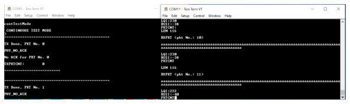

- In this userguide, the TeraTerm is
used for providing Console inputs. On the Menu bar of Tera Term, Goto setup, select
serial port and then set the baud rate to 115200 as shown in the following
figure.Figure 1. Tera Term Settings
- Flash the application to WBZ451 board after build is succesful (as described
here). The P2P application requires 2 devices, where the
source address of peer device 1 is the destination address of peer device 2 and vice
versa. The source address and destination address can be modified in
app_p2p_phy_config.hfile as well as via MCC Project graph configuration Window as shown here - Once the firmware is flashed to the WBZ451 board, the following print will appear in console window (here Tera Term is used). Specific commands (detailed description and reference available in Command Table Description section) should be given to switch between different application modes (explained in detail in the following section).
- The additional Tera Term settings
should be followed as per the following figure. Figure 2. Console Settings
- The following figure shows the simple
flow diagram on the high level process flow from application level to PHY level.Figure 3. Application FlowChart
- The P2P PHY application has 2 source files:
- app_phy_cmd_processor.c which is an interface between console and app/phy layer.
- app_p2p_phy.c which is an interface between user command via console and Phy layer.
- The application features 5 modes
- Data Mode – It is
basic chat feature, where once user enters bytes, it will appear on the peer
device console. User can give time period as well, where the timer starts
once the user starts to enter first byte of data. Even if the user did not
press enter, once the timer expires the data will be sent automatically.
- Data format can be given in format xx :data, where xx
is device index. (for example: 01 :Microchip -
01 specifies Device table index and
Microchip specifies user data), and actual data
comes after “:” .Figure 4. Data Mode Example
- The data can also be sent without any index, in such scenario, the data will be sent to device details (address) stored in index 1 of the device table. If the info in index 1 of the device table is not valid, then the data will be broadcasted.
- For Broadcasting data, format is ff :data (Example : ff :Microchip).
- The device table can be updated with short address and ieee address as per user preference using the console command updateDeviceTable. Commands supported in the application are described in COMMAND TABLE section.
- To enter data mode,
+++,time(in microseconds) should be given in
console.Note: User input can be provided through console in Data Mode only. In all the test modes, the payload data is defined in the application. Data Payload Modifications should be done in the application, if required. Max payload limit in data mode is 232 bytes.(due to Fragmentation of payload feature in application) . As per IEEE 802.15.4 Spec, Max payload size is 127 octets = 116 octets + Max possible Frame Overhead. In App Fragmentation, 116 x 2 = 232 octets + Max possible Frame Overhead = 254 Octets.
- The following figure show the operation of device in data mode, which is accessible using the cmd +++, time (in microseconds).
Figure 5. Data Mode- To exit Data Mode,
&&& command should be given in console. Once
exit from data mode, Device performance parameters like Packet error
rate, no. of bytes sent will be displayed.Figure 6. Exit Data Mode
- Data format can be given in format xx :data, where xx
is device index. (for example: 01 :Microchip -
01 specifies Device table index and
Microchip specifies user data), and actual data
comes after “:” .
- Continuous Test Mode –
Predefined payload of 116 bytes is set in application. Each packet with 116
bytes is sent one by one after the previously sent packets received ack from
the peer device. Max payload size of 116 is set as an example.
- To enter Continuous
Test Mode, the command contTestMode need to be given in the
console.Figure 7. Continuous Test Mode
- To enter Continuous
Test Mode, the command contTestMode need to be given in the
console.
- Periodic Test Mode ---
User can provide a time as input. After periodic expiry of the user
configured time, the predefined payload of 116 bytes will be sent to peer
device. Once the tx is done, without waiting for ack, the next transmit
starts once the timer expires after a configured time.
- To enter Periodic
Test Mode, the command periodTestMode,time(in microseconds)
need to be provided.Figure 8. Periodic Test Mode
-
Note: For all the above modes, the total no. of packets sent, bytes sent, packets which received ack and PER value are displayed at the end.
- To enter Periodic
Test Mode, the command periodTestMode,time(in microseconds)
need to be provided.
- Throughput Test Mode –
Time period of 1 second is set as default in application. The max payload is
predefined (116 bytes), which is sent once tx done cb is called. The
packets are sent continuously until the timer expires. The total no. of
packets sent, bytes sent, packets which received ack and PER value per
second are displayed at the end.
- To enter Throughput
Test Mode, the command throughputTestMode need to be
provided.Figure 9. Throughput Test Mode
- To enter Throughput
Test Mode, the command throughputTestMode need to be
provided.
- PER Test Mode ---
Packet limit is fixed to 100 for this mode. 100 packets are sent
continuously. Each packets are of max payload limit. The total no. of
packets sent, bytes sent, packets which received ack and PER value are
displayed at the end.
- To enter PER Test
Mode, the command perTestMode need to be provided.Figure 10. PER Test Mode

- To enter PER Test
Mode, the command perTestMode need to be provided.
- Each mode operates independently, only one mode can be enabled at a time.
- To stop running test modes,
the command stopTestMode should be used. All the active running test
modes will be stopped. This command can be applied to stop the test modes
only.Figure 11. Stop Active Test Modes
-
Notes:
- Commands to navigate/switch to different modes in application are described in COMMAND TABLE section.
- While the packets are being received, the following info will be displayed: LQI(Link Quality Indicator), RSSI(Received Signal Strength), Received packet Count and Length of received payload in bytes. (Refer to Peer device 2 terminal of Figure 5).
- Data Mode – It is
basic chat feature, where once user enters bytes, it will appear on the peer
device console. User can give time period as well, where the timer starts
once the user starts to enter first byte of data. Even if the user did not
press enter, once the timer expires the data will be sent automatically.